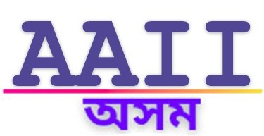

×AI-powered Assamese text-to-speech for the web. Select any Assamese text and hear it read aloud — entirely in your browser.
যিকোনো ৱেবপেজত অসমীয়া লিখনি চিলেক্ট কৰক আৰু শুনক।
AI-ৰ সহায়ত অসমীয়া ভাষাত পঢ়ি শুনাব — সম্পূৰ্ণ আপোনাৰ ব্ৰাউজাৰতে চলে।
Highlight any Assamese text on any webpage. Click the "পঢ়ক" button that appears to hear it read aloud.
Right-click anywhere → "সম্পূৰ্ণ পৃষ্ঠা পঢ়ক" to read an entire article. Great for Wikipedia, news, blogs.
All processing happens in your browser. No data sent to any server. Works offline after first model download.
Built with FastSpeech2 + Multi-Band MelGAN, trained on natural Assamese speech data. Natural-sounding voice.
Automatically converts numbers to Assamese words (১৫২৪ → এক হাজাৰ পাঁচশ চৌবিশ), cleans HTML and references.
Reads sentence by sentence with visual highlighting. No waiting for the entire text to synthesize.
অসমীয়া পঢ়ক uses state-of-the-art neural text-to-speech models running entirely in the browser via ONNX Runtime Web (WebAssembly). No server, no API calls, no data collection.
The models were trained on Assamese speech data as part of a collaboration between the Assam AI Initiative (AAII) and Xobdo.org.
No Data Collection: অসমীয়া পঢ়ক does not collect, store, sell, or transmit any personal or sensitive user data. It does not track browsing activity or store user interaction data.
Local Processing: All text-to-speech processing happens locally in your browser using WebAssembly (ONNX Runtime Web). Selected text is processed only on your device and is never sent to any external server.
Permissions Usage: The extension uses limited permissions strictly for its core functionality. contextMenus is used to provide options for reading selected text or full webpage content. storage is used to save user preferences such as playback speed locally in the browser. offscreen is used to enable background audio playback and model execution.
Website Access: Access to webpages is required only to detect user-selected Assamese text and enable reading functionality. The extension does not collect, monitor, or transmit browsing data.
Third-Party Services: This extension does not use external APIs, analytics tools, or third-party tracking services. All processing is performed locally within the browser.
Contact: For questions or support, please contact: your-email@example.com
Updates: This privacy policy may be updated from time to time to reflect improvements or changes in functionality.